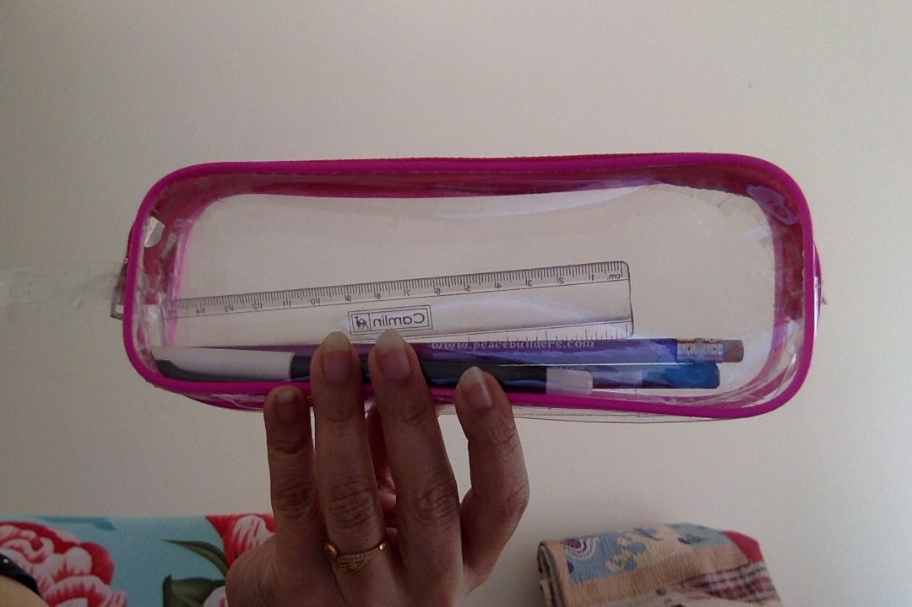
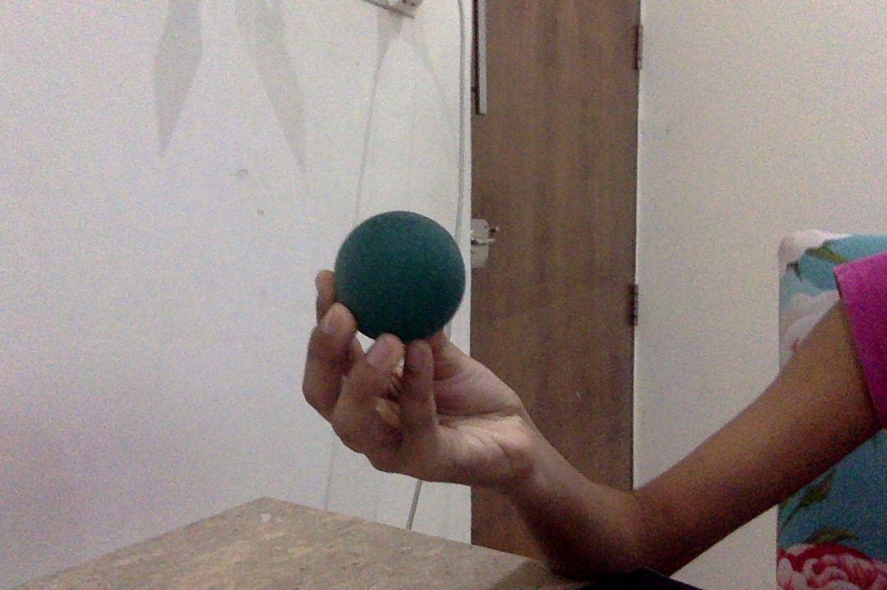
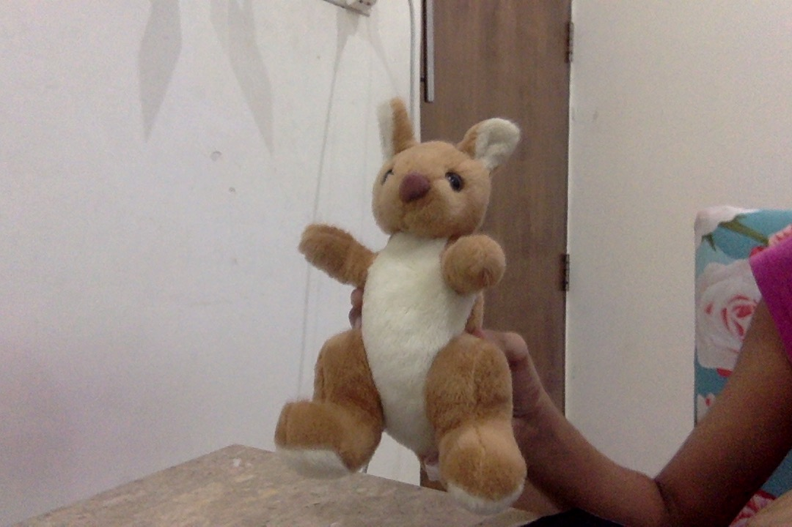
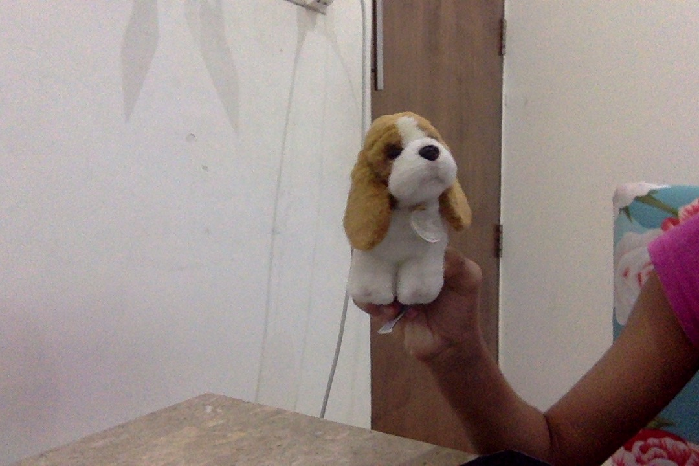
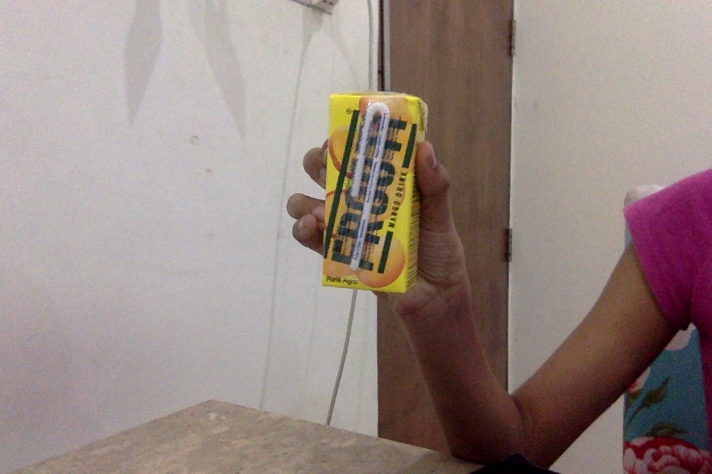
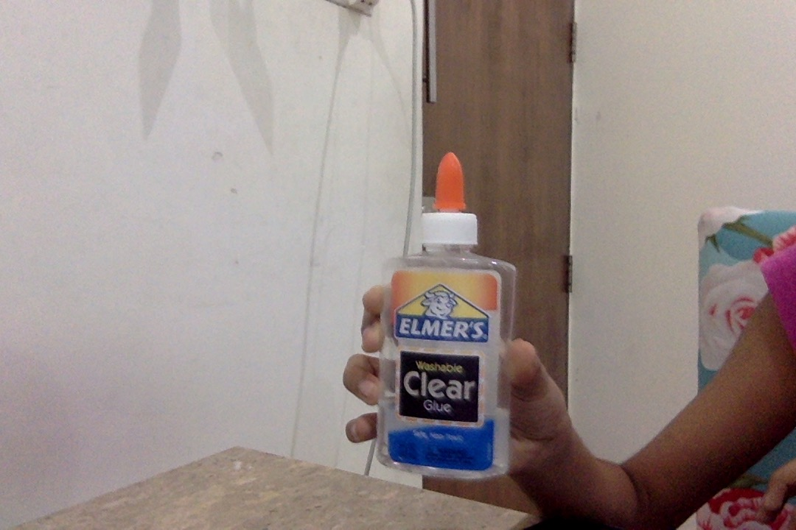
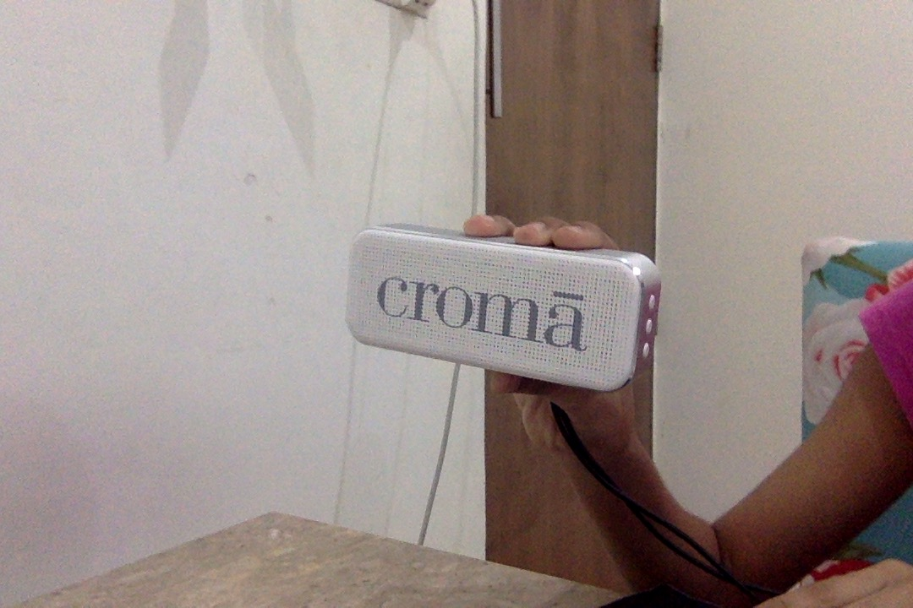
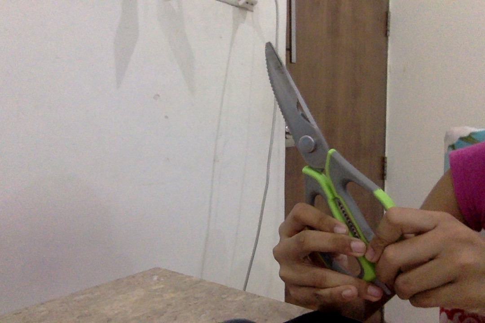
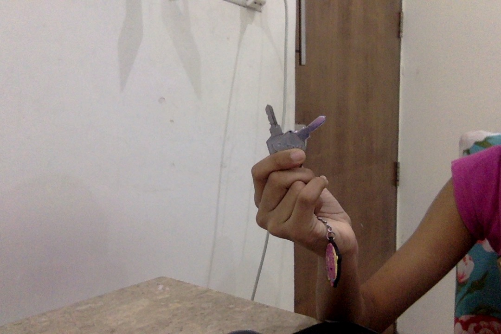

CASE STUDY BETWEEN GOOGLE LENS AND MOBILENET
GOOGLE LENSVS
Mobilenet
- Test Image - 
- Test Image - 
- Test Image - 
- Test Image - 
- Test Image - 
- Test Image - 
- Test Image - 
- Test Image - 
- Test Image - 
Output on GOOGLE LENS - Transparent travel pouch
Output on Mobilenet Model - pencil case
Result - Google Lens is more accurate
Output on GOOGLE LENS - grip Strenthning excercise ball
Output on Mobilenet Model - soft ball
Result - Google Lens is more accurate
Output on GOOGLE LENS - Kangaroo plush toy
Output on Mobilenet Model - Kangaroo soft toy
Result - Both are Accurate
Output on GOOGLE LENS - Baset hound plush
Output on Mobilenet Model - dog soft toy
Result -Google Lens is more accurate
Output on GOOGLE LENS - Frooti mango drink
Output on Mobilenet Model - frooti drink
Result - Google Lens is more accurate
Output on GOOGLE LENS - Elmers clear glue
Output on Mobilenet Model - elmers glue
Result - Google Lens is more accurate
Output on GOOGLE LENS - wireless portable bluetooth
Output on Mobilenet Model - croma bluetooth speaker
Result - Google Lens is more accurate
Output on GOOGLE LENS - multipurpose kitchen scissor
Output on Mobilenet Model - scissors
Result -Google Lens is more accurate
Output on GOOGLE LENS - Keys
Output on Mobilenet Model - keys
Result - both are accurate
I have tested 9 images out of which GOOGLE LENS HAVE PREDICTED 8 ACCURATELY AND MOBILENET IS LESS ACCURATE.SO ACCORDING TO MY CASE STUDY GOOGLE LENS IS MORE ACCURATE
Developed by - WhitehatJR Team